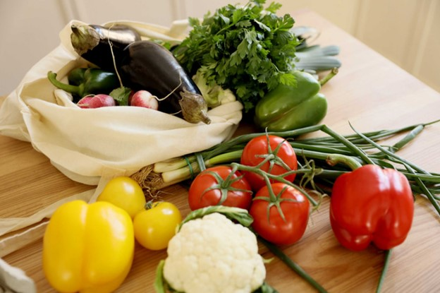
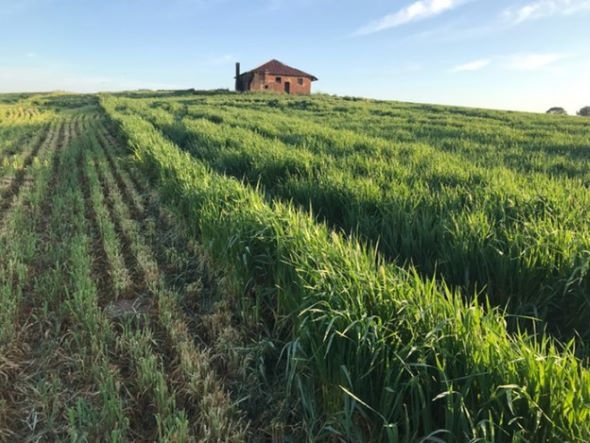
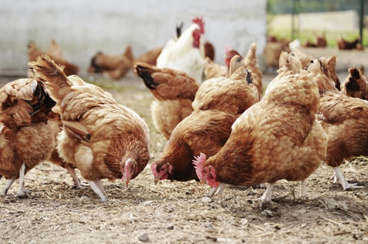

Starting off small and learning basic gardening knowledge is key to being
successful in growing farm fresh produce. Start by growing vegetables that
you like so you find pleasure in your gardening. Being self-sustaining takes
time and a lot of effort and knowledge, but with patience anyone can tackle the
basic necessities of growing their own food. You can learn more from THE TINY LIFE
on their site
Basics of Homestead Gardens.
Farm Fresh Produce


Joe really believes there are more benefits to free range chickens on the homestead
compared to keeping them in a coop all day. Chickens are very friendly and can
be quite funny at times. By raising free range chickens you can experience their
natural behaviors as they forage for food, find places to perch, and gather with
the other chickens. If you would like to learn some tips on raising free range
chickens you can check them out at
Easy Tips For Free-Ranging Your Backyard Chickens.
Free Range Chickens